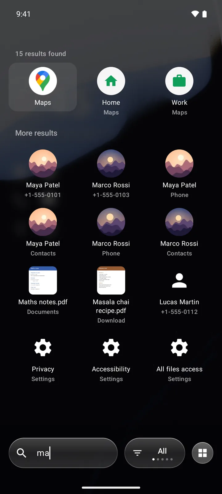

Search
One swipe finds everything.
Swipe up anywhere and start typing. Apps, contacts, calendar events, files, folders, Settings screens and app shortcuts land together, best match first, with a count of what turned up. The search bar sits at the bottom, right under your thumb, on frosted glass over your results.